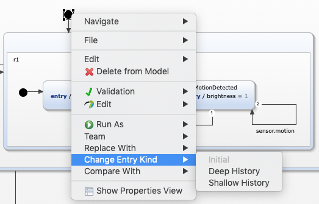

This example demonstrates the usage of history states and explains the difference between a shallow and a deep history.
Let's revisit the light switch example of the Basic Tutorial. To be more concrete, let's start at the point where our light switch can be in one of three possible modes:
The following statechart reflects these requirements:
Consider the following additional requirement: When the user switches from manual to automatic mode, the last active mode shall be activated.
In order to fulfill this requirement, we need to store which state was active before the user switched to manual mode. And this is exactly where history states come in handy.
A shallow history state is a pseudo state that is placed inside the region of a composite state. It is used to remember the last active state inside a composite state. This makes it possible to jump back to the remembered state instead of starting at the inner initial state again.
A history state saves the current state exactly when its containing region is left. A shallow history state saves the state of the current level only. If you need to save the status of multiple nested composite states, use a deep history state instead.
Let's go back to our light switch example. You can easily change the initial state that points to the MotionDetectionMode state into a history node:

Using a shallow history node changes the behavior of the light switch to the following: Whenever the AutomaticMode is entered, the last active state will be activated. For example, if the light switch was in twilight mode when the user pressed the On button, pressing the Off button will set it again into twilight mode, instead of the motion detection mode.
However, the shallow history does not store the inner state of the respective mode state. As the name already says, it only stores the active state on one level, namely the region in which the shallow history node is placed. Regarding our light switch example, this means that switching back to automatic mode will always activate one of the Idle states.
A deep history state is similar to a shallow history state, but more complex. With a deep history state, the latest status of all nested states is remembered.
Let's take a look at our light switch example again. When the light switch is in TwilightDetected state, and the user presses the On button, this state is stored by the deep history and will be activated again when the user switches back to automatic mode. Please note, that already passed time in time triggers is not stored by a history state. When the light switch is in MotionDetected state and stays there for 20 seconds without any motion being registered, switching to manual mode and back, will start the timer at 0 again, i.e. it will take another 30 seconds for the state being switched to Idle.